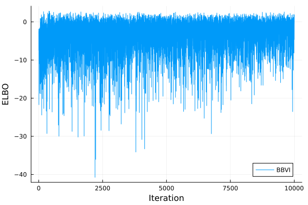

Evidence Lower Bound Maximization
In this tutorial, we will work with a normal-log-normal model.
\[\begin{aligned} x &\sim \mathrm{LogNormal}\left(\mu_x, \sigma_x^2\right) \\ y &\sim \mathcal{N}\left(\mu_y, \sigma_y^2\right) \end{aligned}\]
BBVI with Bijectors.Exp bijectors is able to infer this model exactly.
Using the LogDensityProblems interface, we the model can be defined as follows:
using LogDensityProblems
using ForwardDiff
struct NormalLogNormal{MX,SX,MY,SY}
μ_x::MX
σ_x::SX
μ_y::MY
Σ_y::SY
end
function LogDensityProblems.logdensity(model::NormalLogNormal, θ)
(; μ_x, σ_x, μ_y, Σ_y) = model
return logpdf(LogNormal(μ_x, σ_x), θ[1]) + logpdf(MvNormal(μ_y, Σ_y), θ[2:end])
end
function LogDensityProblems.logdensity_and_gradient(model::NormalLogNormal, θ)
return (
LogDensityProblems.logdensity(model, θ),
ForwardDiff.gradient(Base.Fix1(LogDensityProblems.logdensity, model), θ),
)
end
function LogDensityProblems.dimension(model::NormalLogNormal)
return length(model.μ_y) + 1
end
function LogDensityProblems.capabilities(::Type{<:NormalLogNormal})
return LogDensityProblems.LogDensityOrder{1}()
endNotice that the model supports first-order differentiation capability. The required order of differentiation capability will vary depending on the VI algorithm. In this example, we will use KLMinRepGradDescent, which requires first-order capability.
Let's now instantiate the model
using LinearAlgebra
n_dims = 10
μ_x = randn()
σ_x = exp.(randn())
μ_y = randn(n_dims)
σ_y = exp.(randn(n_dims))
model = NormalLogNormal(μ_x, σ_x, μ_y, Diagonal(σ_y .^ 2));
nothingLet's now load AdvancedVI. In addition to gradients of the target log-density, KLMinRepGradDescent internally uses automatic differentiation. Therefore, we have to select an AD framework to be used within KLMinRepGradDescent. (This does not need to be the same as the AD backend used for the first-order capability of model.) The selected AD framework needs to be communicated to AdvancedVI using the ADTypes interface. Here, we will use ReverseDiff, which can be selected by later passing ADTypes.AutoReverseDiff().
using ADTypes, ReverseDiff
using AdvancedVI
alg = KLMinRepGradDescent(AutoReverseDiff());
nothingNow, KLMinRepGradDescent requires the variational approximation and the target log-density to have the same support. Since y follows a log-normal prior, its support is bounded to be the positive half-space $\mathbb{R}_+$. Thus, we will use Bijectors to match the support of our target posterior and the variational approximation.
using Bijectors
function Bijectors.bijector(model::NormalLogNormal)
(; μ_x, σ_x, μ_y, Σ_y) = model
return Bijectors.Stacked(
Bijectors.bijector.([LogNormal(μ_x, σ_x), MvNormal(μ_y, Σ_y)]),
[1:1, 2:(1 + length(μ_y))],
)
end
b = Bijectors.bijector(model);
binv = inverse(b)
nothingFor the variational family, we will use the classic mean-field Gaussian family.
d = LogDensityProblems.dimension(model);
μ = randn(d);
L = Diagonal(ones(d));
q0 = AdvancedVI.MeanFieldGaussian(μ, L)
nothingAnd then, we now apply the bijector to the variational family.
q0_trans = Bijectors.TransformedDistribution(q0, binv)
nothingPassing objective and the initial variational approximation q to optimize performs inference.
n_max_iter = 10^4
q_out, info, _ = AdvancedVI.optimize(alg, n_max_iter, model, q0_trans; show_progress=false);
nothingClipScale is a projection operator, which ensures that the variational approximation stays within a stable region of the variational family. For more information see this section.
q_out is the final output of the optimization procedure. If a parameter averaging strategy is used through the keyword argument averager, q_out is be the output of the averaging strategy.
The selected inference procedure stores per-iteration statistics into stats. For instance, the ELBO can be ploted as follows:
using Plots
t = [i.iteration for i in info]
y = [i.elbo for i in info]
plot(t, y; label="BBVI", xlabel="Iteration", ylabel="ELBO")
savefig("bbvi_example_elbo.svg")
nothing
Further information can be gathered by defining your own callback!.
The final ELBO can be estimated by calling the objective directly with a different number of Monte Carlo samples as follows:
estimate_objective(RepGradELBO(10^4), q_out, model)-6.778946377665138